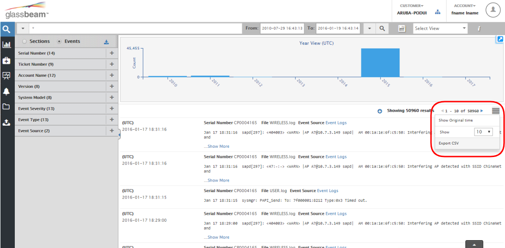
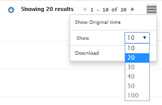
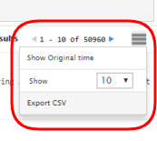
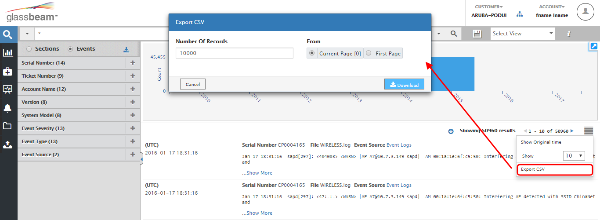

Search results area
The Search Results Area contains the graph timeline search. You can use the graph timeline, to drill down the search results up to the second, minute, hour, day, or year's occurrence of the log file.

Navigate through the results by clicking the Visual Control Options drop down.
- Set result searches to display the original time
The timestamp displayed for the records is configured to the UTC time zone by default. However, if you want the time to be based on the original timestamp, select the Customize and Control Glassbeam icon, and click Show original time.
- Show more than 10 items per page
You can easily adjust the display settings. By default, only 10 items are displayed. Use the options in the drop down menu to increase the results / page as you require Maximum number of items per page is 100.

- Export results for offline analysis to CSV format
Exporting the results to CSV format for offline analysis is possible. To export the search results, click the Customize and Control Glassbeam icon and then select Export CSV.

In the Export CSV dialog, enter a numeric value in the Number of Records field. Select either Current Page or First Page. ClickDownload. For instance, if you wanted to export 1000 records from page 10, then on page 10, use the Export CSV option, specify the number of records and click Download to complete. This action will allow you to export 1000 records from page 10. The maximum number of records you can export is 10000.

Note: Exporting to the CSV format is only available for Events related data.
Created with the Personal Edition of HelpNDoc: Free PDF documentation generator